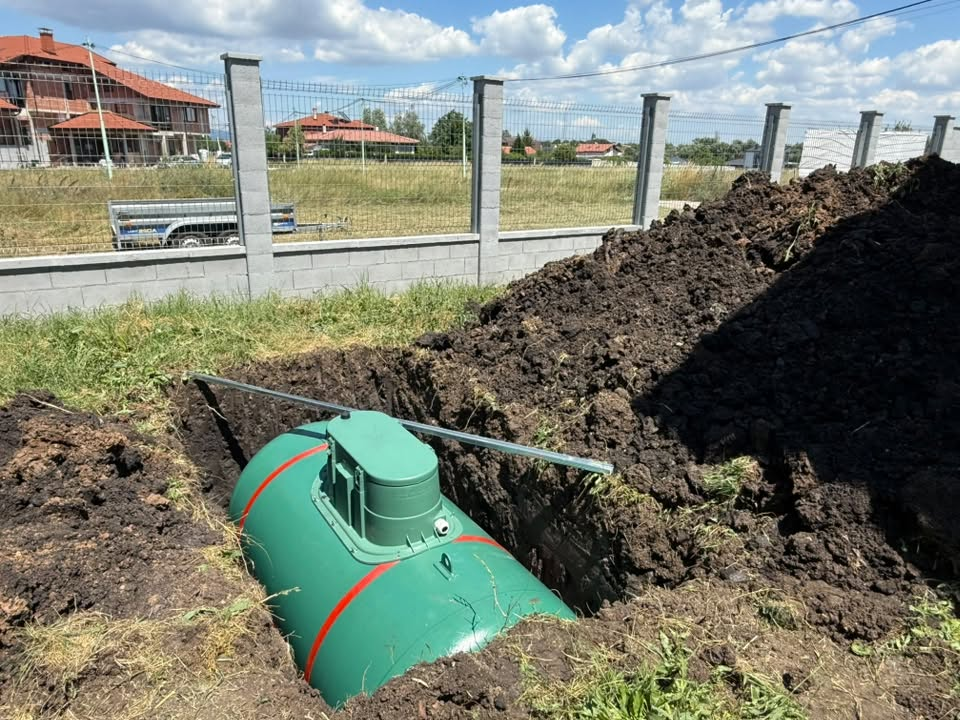
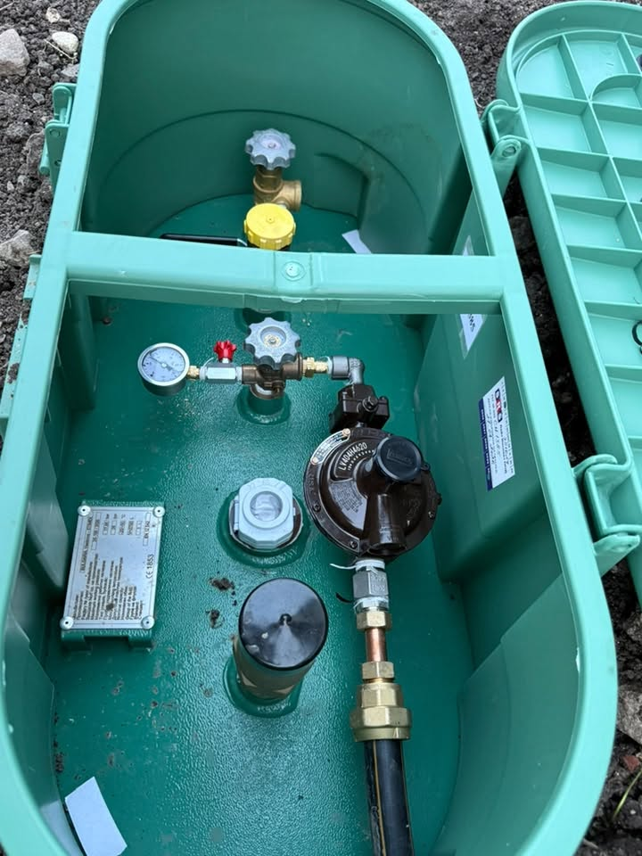

Какво включва доставка и монтаж на резервоар
Базирани сме в Костинброд и обслужваме София и София област. Поемаме процеса — от оглед и оферта до монтаж и настройка.
Подбираме обем според консумацията и мястото на обекта. Доставяме резервоари 1750 л и 2700 л, организираме разтоварването и подготовката за подземен монтаж. Често комбинираме с газови трасета и котел.
Подземните резервоари за пропан-бутан са решение за автономно газоснабдяване, когато няма градски газ или искате независимост.
Организираме доставка и разтоварване, подземен монтаж и връзка към регулаторната група. Често продължаваме с трасе и котел.
- Резервоари 1750 л и 2700 л за подземен монтаж
- Доставка и разтоварване на обекта
- Монтаж и връзка към регулаторна група
- Координация с котли и газови трасета
Как се оферира резервоар пропан-бутан
Цената зависи от обема (1750/2700 л), достъпа за разтоварване и изкопните/монтажни работи. Даваме конкретна оферта след оглед на мястото — без „пакет на сляпо“.
Какво не е включено / уточняваме честно: Не обещаваме срок без оглед на достъпа за техника. Извозване на земна маса уточняваме отделно, ако е нужно.
От реален обект
Къде поставяме резервоари в областта
Доставка и монтаж на резервоар пропан-бутан в София област — Костинброд, Сливница, Драгоман, Годеч, Божурище, Своге, Елин Пелин, Банкя, Нови Искър и София (където теренът позволява).
Вижте покритието по населени места ↓
Логистика, изкоп и връзка
Оглед
Място, достъп за техника и нужен обем.
Доставка
Резервоарът пристига на обекта с организирано разтоварване.
Монтаж
Подземен монтаж и връзки към системата.
Готовност
Проверки преди експлоатация.
Резервоари на терен



Въпроси за пропан-бутан
Какъв е ценовият ориентир за резервоар пропан-бутан?
Цената зависи от обема (1750/2700 л), достъпа за разтоварване и изкопните/монтажни работи. Даваме конкретна оферта след оглед на мястото — без „пакет на сляпо“.
Какъв резервоар ми трябва?
Зависи от консумацията и пространството. След оглед предлагаме подходящ обем.
Правите ли подземен монтаж?
Да — подземни резервоари за пропан-бутан.
Обслужвате ли Сливница и Драгоман?
Да — и целия регион около Костинброд.
Резервоар пропан-бутан в София — работите ли?
В София подземен резервоар е възможен при подходящ двор/терен — огледът решава дали е реалистично. Обадете се на 0886 391 729 за оглед.
Резервоар пропан-бутан в Костинброд — работите ли?
От Костинброд организираме най-бърза логистика за разтоварване и монтаж на резервоар. Обадете се на 0886 391 729 за оглед.
Резервоар пропан-бутан в Сливница — работите ли?
В Сливница често доставяме 1750/2700 л с ясен прозорец за кран/разтоварване. Обадете се на 0886 391 729 за оглед.
Резервоар пропан-бутан в Драгоман — работите ли?
Около Драгоман планираме достъпа на тежката техника преди датата на доставка. Обадете се на 0886 391 729 за оглед.
Резервоар пропан-бутан в Годеч — работите ли?
За Годеч комбинираме доставка и монтаж, за да намалим броя посещения. Обадете се на 0886 391 729 за оглед.
Резервоар пропан-бутан в Божурище — работите ли?
Божурище — удобно за дневна доставка от базата без дълъг престой на техниката. Обадете се на 0886 391 729 за оглед.
Резервоар пропан-бутан в Своге — работите ли?
В Своге теренът и пътят са критични: уточняваме ги преди поръчка на резервоара. Обадете се на 0886 391 729 за оглед.
Резервоар пропан-бутан в Елин Пелин — работите ли?
Елин Пелин и зоната — подходящи за по-големи обеми при индустриални/къщни обекти. Обадете се на 0886 391 729 за оглед.
Резервоар пропан-бутан в Банкя — работите ли?
В Банкя работим дискретно в жилищни дворове с внимание към съседите. Обадете се на 0886 391 729 за оглед.
Резервоар пропан-бутан в Нови Искър — работите ли?
Нови Искър — логистика от Костинброд в рамките на работния ден. Обадете се на 0886 391 729 за оглед.